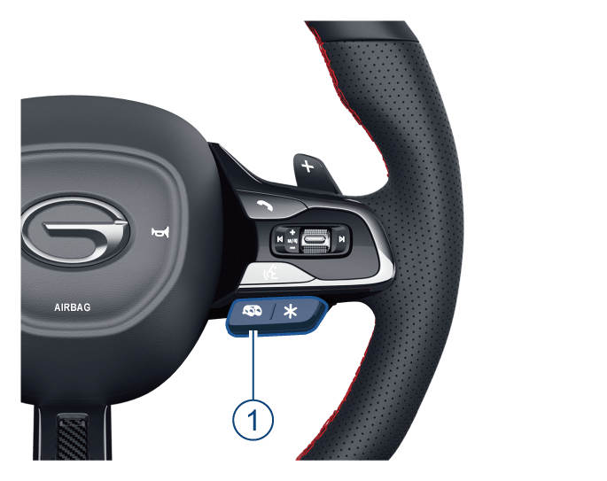

通过方向盘右侧的排气声浪按键开关①，根据不同的驾驶模式选择开启或关闭排气声浪。
5.1.8 排气声浪*
用户可通过交互界面实现排气模式的切换，根据发动机转速、节气门开度及挡位信号，控制调音阀开度，实现排气系统声学与背压连续可调。当开启排气声浪阀门时，可听到动感悦耳的排气声浪音。


通过音响主机界面图标进入驾驶模式-当前模式设置，根据不同的驾驶模式，选择软按键①开启或关闭排气声浪。
操作方法：
–整车驾驶模式为ECO时，排气声浪为关闭状态，不可通过开关来开启。
–
–
–排气声浪开启时，仪表将显示出排气声浪图标；关闭排气声浪即图标消失。
— 页面到底了 —